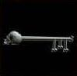

|  |
|
|
|
|
This item is found on level 8 or deeper, and is "Very Rare".
(Commonality value of 4)
This item can be dropped by:
Gorguni, Mengu-Ogre, Gargantuan, Pit Fiend, Demon Prince, Freezing Mist, Que'ssus, Shadow Dragon, Giant Wasp, Vampire, Night Screamer, Vampire Lord, Lamurian Mage, Destroyer of the Deep, Giant King, Shadow Golem, Charon, Blue Gremlin, Griffin, Golden Centaur, Purple Gremlin, Phoenix, Werewolf, Werebear, Thief, Illusionist, Apparitionist, Mage, Mercenary, Defender, Master Ninja, Hero,
Use your browser's BACK button to get back